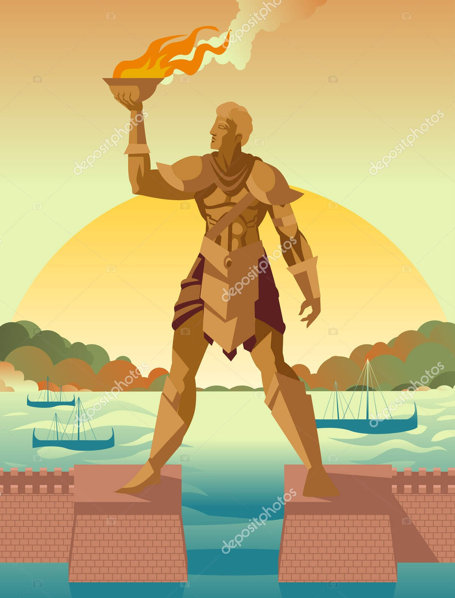
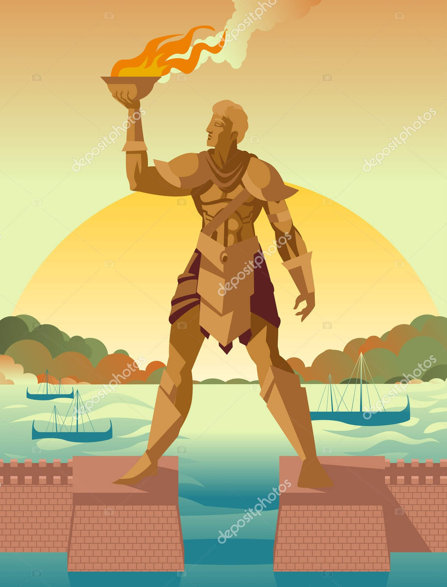

Colosso de Rodes
Uma das sete maravilhas do mundo antigo, o Colosso de Rodes foi uma estátua gigantesca do deus Hélio, símbolo da grandeza da Grécia Antiga.
O Colosso de Rodes, uma das Sete Maravilhas do Mundo Antigo, foi uma estátua construída na ilha grega de Rodes, por volta de 280 a.C, medindo cerca de 30 metros de altura para homenagear o deus Hélio, patrono da ilha, que na época saiu vitoriosa na batalha contra o exército de Demétrio I da Macedônia.
Infelizmente, em 226 a.C., cerca de 56 anos após sua construção, um terremoto derrubou a estátua, quebrando seus joelhos. Embora destruído, o Colosso deixou um legado como um símbolo da ilha e da sua força.
O monumento foi incluído na lista das Maravilhas do Mundo Antigo graças à sua escala grandiosa, as técnicas utilizadas na sua construção e principalmente seu significado pujante que foi sinônimo de vitória e arte.
 
